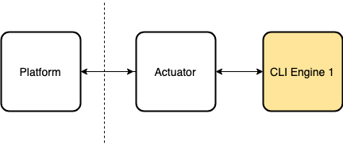

When I joined my previous job I was faced with what had become a Gordian knot in that company. For years it had shackled progress and innovation. Eventually, the opportunity for improvement appeared and a solution so simple was implemented that I was baffled that none of us had seen it before. After that, all pieces seemed to fall in place on their own and the gears started turning.
I learned a valuable lesson about software design from that.
The pipeline at the moment consisted of having transformed the previous product (a desktop application) into a monolithic engine behind a CLI. The platform of the new project would invoke that through remote sensors and return the results.
For illustration here's a simplified diagram.

The engine was over 100K LOC, and we needed to tear it down into services. Some of the problems we were facing had to do with coordinating our sprints with the Platform's team to make sure nothing broke, but the pace of the project made it very complex as there were many fronts to attack. On our side we couldn't do much on our own because the CLI was based on the desktop application, so the parameters it needed were a bunch of XMLs that represented the internal state of the main core class.
We were stuck with this for quite a while until I had the chance to develop a new engine that would integrate with a completely different system. Since we didn't want to limit ourselves from the start (and we had the urgency of coming up with a new product) after some convincing I was able to join forces with other teams and implement a public interface for each service. The new engine would require just the necessary parameters while the old one would receive whatever it was it needed as "extra params"
From here on two things happened:
- There was no need (or much less) to sync with other teams to work on our stack.
- We were able to break down our monolithic under the condition of committing to the new public API.
- The new services would not require the internal objects of the desktop application, so they were simpler and easier to test.
After a couple of months it looked like this:
We reduced the LOC count to <10K and greatly increased the testability. Eventually, the support tickets regarding our stack became less and less frequent. The monolith engine it's still there, but now it has only one responsibility. As for the public API, it also has the responsibility of transforming the output from the new services (which is our ideal output) to the old output generated by the desktop app (because the Platform expects that), but that is another battle...
This is a story about imperfect software design, about working on something huge under constraints beyond our control, patience and choosing your battles. What I learned is that the opportunity for change may come someday and you may not have control over it, all you can do is be ready. Understand the problem in deep, know your constraints, think outside the box and spend your time, not frustrating, but preparing to make the best out of the opportunity when (if) it comes.
And most importantly, have patience and a clear mind.